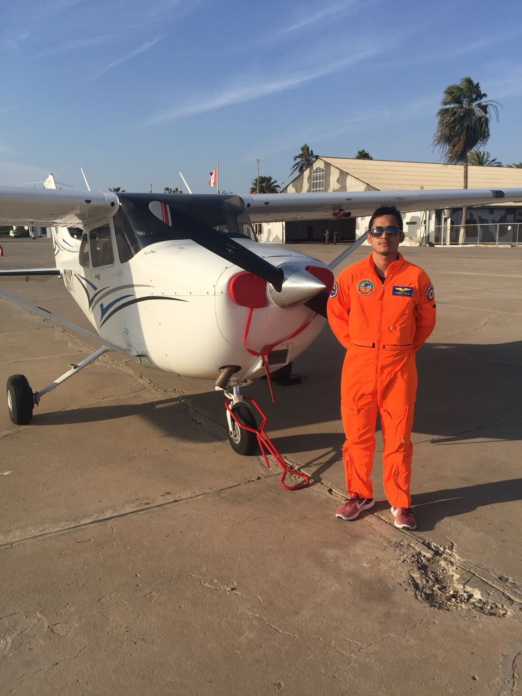

About Me
Mechanical Engineering graduate and current Physics with Astrophysics student (penultimate year) at the University of Bristol. Passionate about experimental particle physics, flavour physics, rare decays, and CP violation. Experienced in numerical simulations, computational fluid dynamics, spectroscopy, and data analysis.
I have worked as a research intern at KAUST and University of Alberta, with publications in high-temperature spectroscopy, shock tubes, and environmental fluid mechanics. I enjoy combining computational modeling with experimental work to answer fundamental physics questions.
Research Interests
- Experimental particle physics
- Flavour physics – rare decays & CP violation
- High-temperature spectroscopy
- Computational fluid dynamics (CFD)
- Shock tube / detonation tube characterization
Publications & Conferences
Education
🎓 University of Bristol
BSc Physics with Astrophysics (First Class)
Year 1 Physics Representative | Student Helper for the School of Physics
Societies: FS AI, Bij, Chaos
🌎 Colorado School of Mines
Exchange Programme – Mechanical Engineering
Studied advanced mechanics, thermodynamics, and CFD in the USA.
✈️ Private Pilot License – Escuela de Aviación Civil del Perú
2nd place in class

Cessna 175 Skyhawk – where everything started
Where everything started ✈️
The first time I sat in a Cessna 175 Skyhawk, I realized physics wasn't just equations on a blackboard — it was lift, drag, thrust, and weight working together in perfect balance. That feeling of takeoff, the hum of the engine, the instruments coming alive… that's when I truly understood the principles of machines and applied physics.
Learning to fly taught me intuition for aerodynamics, control systems, and the beautiful intersection between theory and real-world engineering. It remains my favourite place — not just in the sky, but in my journey as a scientist.
Awards & Scholarships
- Think Big Scholarship – University of Bristol (2024)
- Santander Skills Scholarship – Harvard Business Publishing (2023)
- ELAP Scholarship – Winner (2022)
- IEC Young Professional – INACAL (2020)
- National Champion – Brazilian Jiu-Jitsu (2015, 2016)
Volunteering
- Academic Mentor – Physics I, II & Mathematics I
- STEAM projects for Peruvian schools – UTEC & Aleup
- UTEC INVENT
Hobbies & Interests
- Brazilian Jiu-Jitsu (2x National Champion)
- Aviation – Private Pilot
- Computational modeling & open-source physics tools